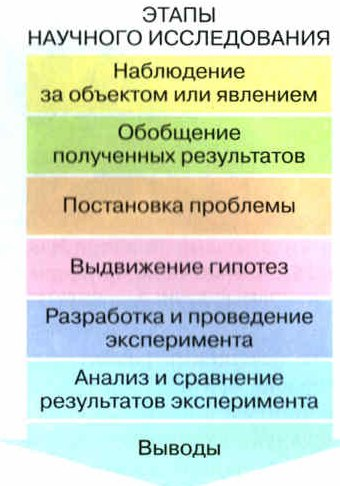
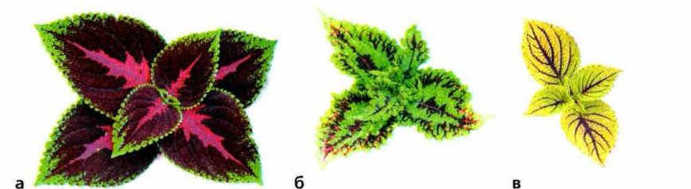
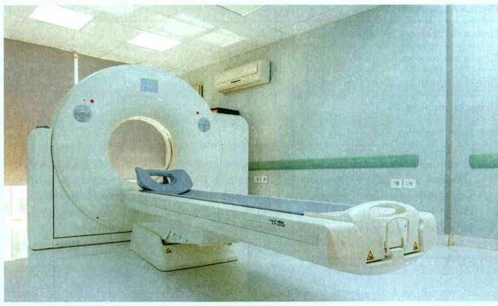

Эксперимент как научный метод
Эксперимент — это исследование в специально созданных и контролируемых условиях. Оно показывает, как эти условия влияют на объект или явление. Слово от латинского экспериментум — проба, опыт.
Эксперимент сложнее наблюдения. С его помощью учёные подтверждают или опровергают свои научные предположения — гипотезы.
Главное отличие от наблюдения: в эксперименте учёный сам действует — меняет условия.
Пример. Есть препараты, которые помогают черенкам растений пустить корни, например корневин. Как проверить, работает ли он? Берут две группы одинаковых черенков с одного растения. Ставят их в одинаковые условия: свет, температура, влажность.
Одну группу обрабатывают корневином — это экспериментальная группа. Другую ставят в обычную воду — это контрольная группа, для сравнения. Сосуды прозрачные, чтобы видеть корешки.
Всё время следят за обеими группами: когда появились корешки, какой они длины, как растёт растение, появляются ли новые листья. Всё записывают. Потом сравнивают и делают вывод, помогает ли корневин.
Чем больше растений в опыте, тем точнее вывод. Если в одинаковых условиях несколько опытов дали одно и то же — говорят о достоверности результатов.
Можно сравнить и несколько препаратов сразу — тогда экспериментальных групп будет несколько.
Исследование, проводимое в специально созданных и контролируемых условиях, которые позволяют установить, как эти условия влияют на объект или явление, называют экспериментом (от лат. экспериментум — проба, опыт). Эксперимент — более сложный, практический метод, чем наблюдение. С его помощью учёные подтверждают или опровергают свои научные предположения — гипотезы. От наблюдения эксперимент отличается активным воздействием на изучаемый объект.
В настоящее время промышленность выпускает препараты для укоренения черенков растений (корневин, фитоклон, циркон и др.). Например, можно опытным путём проверить, как влияет применение корневина на образование корней у черенков комнатных растений. Для этого берут две группы одинаковых черенков с одного растения и помещают их в одинаковые условия (освещённость, температура, влажность воздуха и т. п.). Одну группу черенков используют для исследования (экспериментальная группа), вторую — для сравнения (контрольная группа). Черенки экспериментальной группы обрабатывают корневином в соответствии с инструкцией, а черенки контрольной группы помещают в обычную воду без обработки в прозрачные сосуды. Через прозрачные стенки легко наблюдать за развитием корешков.
В течение всего эксперимента наблюдают за ростом и развитием растений экспериментальной и контрольной групп. При этом отмечают появление корешков, измеряют их длину, а также развитие самого растения (его высоту, появление новых листьев, их площадь и т. п.). Все показатели подробно записывают. Сравнивая полученные данные, делают вывод об эффективности применения корневина. Чем больше растений в экспериментальной группе, тем точнее выводы. Если при соблюдении одних и тех же условий результаты нескольких опытов совпадают, то говорят о достоверности полученных данных.
Можно сравнить эффективность различных препаратов для укоренения черенков. В этом случае у вас будет несколько экспериментальных групп (по числу используемых препаратов).
только смотрим и записываем, ничего не меняем (§4)
сами меняем условия и смотрим, что будет
Помнишь правило из §4? Если выманить Юкси семечками, это уже не наблюдение: ты вмешалась.
1. Чем эксперимент отличается от наблюдения? Найди точные слова учебника.
2. Зачем в опыте с корневином нужна контрольная группа?
3. Почему черенки берут с одного растения и ставят в одинаковые условия?
Этапы научного исследования
Обычно исследование начинается с наблюдения (рис. 25). Учёные разбирают и обобщают то, что увидели, и выдвигают гипотезы — предположения, которые могут это объяснить.
Потом придумывают и проводят эксперименты, чтобы проверить гипотезы. В научном эксперименте обязательно есть контрольный опыт. Его условия отличаются от эксперимента одним и только одним фактором.
По результатам решают, какая гипотеза верна. Гипотеза, которую проверили и которая совпала с фактами, может стать теорией или законом. Законом учёные называют что-то всеобщее, бесспорное и очень достоверное. Часто слова «закон» и «теория» используют как одинаковые.
Для своих опытов пользуйся памяткой «Порядок проведения научного эксперимента» в конце страницы.
Обычно научное исследование начинается с наблюдения за объектом или явлением (рис. 25). После анализа и обобщения данных, полученных в результате наблюдений, выдвигаются гипотезы (предположения), которые могут их объяснить.
На следующем этапе исследования разрабатывают и проводят эксперименты для проверки выдвинутых гипотез. Научный эксперимент должен непременно сопровождаться контрольным опытом, условия которого отличаются от условий эксперимента одним (и только одним) фактором. Анализ результатов эксперимента позволяет решить, какая из гипотез верна. Гипотеза, которая была проверена и оказалась соответствующей фактам, может стать теорией или законом. Называя какое-либо положение законом, учёные как бы подчёркивают его универсальность, неоспоримость, большую достоверность. Часто термины «закон» и «теория» употребляются как равнозначные.
При организации собственных биологических экспериментов (опытов) используйте памятку (с. 45).

догадка, которую ещё надо проверить
проверенная гипотеза, совпавшая с фактами
Сначала «наверное», потом «точно».
4. С чего обычно начинается научное исследование и чем оно заканчивается?
5. Чем условия контрольного опыта отличаются от условий эксперимента?
6. Когда гипотеза может стать теорией или законом?
Особенности биологического эксперимента
Разберём эксперимент по шагам — как свет влияет на рост и развитие растений. Наблюдения показывают: растениям для роста нужен свет.
Проблема (вопрос): как яркость освещения влияет на рост и развитие комнатного растения колеуса?
Гипотеза: колеус нормально растёт и развивается только при определённом освещении.
План: три укоренённых черенка колеуса с одного растения. Одинаковые горшки, одинаковая почва, одна комната, одна температура и влажность, поливают в одно время одинаковым количеством воды. Разное только освещение: первый — на солнечном окне, второй — в трёх метрах от окна, куда не попадают прямые лучи, третий — далеко от окна, в полутени.
Наблюдение: два месяца. В дневник записывают высоту растений, размер и окраску листьев.
Результат (рис. 26): первое растение росло хорошо, листья крупные, зелёные, красные, бордовые и жёлтые. У второго листья зеленее, красных и жёлтых оттенков меньше. У третьего побеги вытянуты, листья мельче и бледнее.
Вывод: колеус — светолюбивое растение, ему нужно яркое освещение. Гипотеза подтвердилась.
Это учебный эксперимент, его результат заранее известен. В настоящем научном эксперименте берут как можно больше растений и обязательно повторяют опыт. Иногда контрольного варианта может и не быть.
Разным растениям нужно разное освещение. Например, сенполии (узамбарской фиалке) нужен не яркий свет, а полутень. Даже простое исследование даёт научные выводы, если его хорошо продумать и провести по всем правилам.
Рассмотрим особенности биологического эксперимента, включая его конкретные этапы, на примере изучения влияния условий на рост и развитие растений. Наблюдения показывают, что для их роста и развития необходим свет. Итак, мы можем сформулировать проблему исследования в виде вопроса: «Какое влияние оказывает интенсивность освещения на рост и развитие растений колеуса?» Следующий этап — выдвижение гипотезы. Мы можем предположить, что нормальный рост и развитие комнатного растения колеуса происходит только при определённом освещении. Теперь, для того чтобы проверить нашу гипотезу, разработаем план эксперимента и проведём его. Возьмём три укоренённых черенка колеуса, полученные с одного растения. Поместим их в одинаковые условия: посадим в горшки одинакового размера, заполненные одинаковой почвой, и будем выращивать в одном помещении при одинаковой температуре и влажности воздуха, а полив всех трёх растений проводить в одно время одинаковым количеством воды. Различной будет только интенсивность освещения растений. Первое растение поместим на окно с ярким солнечным освещением, второе — в трёх метрах от окна так, чтобы на него не попадали прямые солнечные лучи, третье — вдали от окна, в полутени.
Будем вести наблюдения за ростом и развитием растений в течение двух месяцев. Результаты записываем в дневник наблюдений. Отмечаем высоту растений, размер листьев, их окраску. Через два месяца, проанализировав результаты эксперимента, мы можем прийти к выводу, что интенсивность освещения действительно оказывает большое влияние на рост и развитие растений колеуса. Первое растение хорошо росло и развивалось. Его листья крупные с зелёными, красными, бордовыми, жёлтыми оттенками. У второго растения листья более зелёные. Красные, бордовые и жёлтые оттенки при этом менее выражены. У третьего растения побеги вытянуты, а листья более мелкие и бледные. Делаем вывод: колеус — светолюбивое растение, которому для нормального развития необходимо довольно яркое освещение. При менее ярком освещении развитие колеуса нарушается, что проявляется в величине и окраске его листьев (рис. 26). Таким образом, мы подтвердили гипотезу, выдвинутую в начале исследования.
Следует отметить, что мы проводили учебный эксперимент, результаты которого хорошо известны. В научном эксперименте всегда берётся не одно, а как можно больше растений, обязательно достоверность результатов проверяется проведением повторных экспериментов. Иногда в эксперименте может и не быть контрольного варианта.
Если вы будете оценивать влияние света на другие растения, то убедитесь, что требования растений к освещённости могут сильно отличаться. Например, сенполия (узамбарская фиалка) — одно из самых распространённых комнатных растений — нуждается не в ярком свете, а в полутени. Итак, даже на основе самого простого исследования можно сделать научно обоснованные выводы, если его тщательно продумать и провести, соблюдая все требования.

▲ Как изменились окраска и размер листьев у растения в полутени? Это задание 3 в «Моей лаборатории».
7. Что в опыте с колеусом было одинаковым, а что — разным?
8. Как выглядел колеус в полутени по сравнению с растением на солнечном окне?
9. Чем учебный эксперимент отличается от научного?
Итоги и «Моя лаборатория»
Эксперимент · Гипотеза · Контрольный опыт · Теория · Закон
- Какое значение имеют биологические исследования?
- Какие этапы выделяют в научном исследовании?
- Что такое научный эксперимент? С какой целью он проводится?
- Почему в эксперименте проводят наблюдение как минимум за двумя группами объектов?
- Чем гипотеза отличается от закона или теории?
Чем эксперимент отличается от наблюдений?
- Используя дополнительные источники информации (научно-популярную литературу, справочники, статьи, в том числе ресурсы Интернета), выясните, какие биологические эксперименты проводятся в настоящее время. Выберите из них наиболее понравившийся вам и подготовьте о нём краткое сообщение.
- Самостоятельно поставьте биологический эксперимент. Возьмите две небольшие баночки. В каждую из них налейте воды. Поместите в них по луковице. Одну банку с луковицей поставьте на окно, которое хорошо освещается солнцем, а другую — там, где практически солнца не бывает. Температура в обоих случаях должна быть одинаковой. По мере необходимости доливайте в банки воду. Проведите наблюдение за происходящими изменениями в течение 10 дней. Результаты наблюдений записывайте в таблицу «Влияние света на развитие листьев лука». Сделайте выводы о влиянии уровня освещённости на развитие листьев лука.
- В описанном в параграфе эксперименте (см. рис. 26) один из укоренённых черенков колеуса выращивался в полутени. Как изменились окраска и размер листьев колеуса по сравнению с контрольным растением? Для чего было необходимо задавать и соблюдать одинаковые условия выращивания для трёх растений, изменяя только интенсивность освещения?
Дневник опыта: влияние света на листья лука
Банка № 1 — на солнечном окне, банка № 2 — там, где солнца почти нет. Записывай прямо сюда: всё сохранится в этом браузере.
| Происходящие изменения | № 1 свет | № 2 темнота |
|---|---|---|
| Листья появились | ||
| Длина листьев на 5-й день | ||
| Длина листьев на 8-й день | ||
| Длина листьев на 10-й день | ||
| Окраска листьев | ||
| Внешний вид листьев | ||
| Вывод | ||
История науки — это история новых методов исследования. Эксперимент в биологии связывают с именем английского учёного Уильяма Гарвея. В 1628 году он впервые провёл эксперименты по изучению движения крови в теле овцы и доказал: кровь возвращается к сердцу по замкнутому кругу. Так появилась теория кровообращения.
Но широко пользоваться экспериментом в биологии стали только в XIX веке, а в XX веке он стал главным методом. Помогли новые приборы: электронный микроскоп (1932 год), томограф (1969 год, рис. 27). Эксперимент сильно изменил биологию и открыл новые пути, чтобы пользоваться её знаниями.
Кроме лабораторных опытов, бывают и природные эксперименты. В Центрально-Чернозёмном заповеднике много лет изучают, как степь зарастает деревьями. Оказалось: диких травоядных животных в степи стало мало, и если человек совсем не вмешивается, степные растения могут исчезнуть. По результатам учёные составили рекомендации, как сохранить заповедную степь.
История любой науки, и биологии в частности, — это история разработки и применения новых методов исследования. Так, в биологии применение экспериментального метода связывают с именем Уильяма Гарвея. В 1628 году этот английский учёный впервые провёл эксперименты по изучению движения крови в теле овцы и доказал, что кровь возвращается к сердцу по замкнутому циклу. На основании этих экспериментов была сформулирована теория кровообращения.
Однако широко применяться в биологии эксперимент начал лишь в XIX веке, а в XX веке экспериментальный метод становится ведущим в биологической науке. Это было обусловлено появлением новых приборов для исследований. Например таких сложных, как электронный микроскоп, созданный в 1932 году, томограф (рис. 27), сконструированный в 1969-м. Во второй половине XX века в биологии развивается целое направление, которое предусматривает разработку новых экспериментальных методов исследования и создание новейших приборов.
Экспериментальный метод коренным образом преобразил биологию. Он позволил многократно расширить её познавательные возможности и открыть новые пути для использования биологических знаний во всех сферах деятельности человека.
Кроме лабораторных, в биологии часто проводятся природные эксперименты. Так, в одном из старейших в России Центрально-Чернозёмном государственном природном биосферном заповеднике в течение многих лет изучается процесс зарастания степных участков древесными породами. Оказалось, что в современных условиях на степных участках уже редко встречаются дикие травоядные животные, поэтому при полном невмешательстве человека велика опасность потерять те растительные сообщества, ради которых заповедник создавался. На основе результатов своих исследований учёные разработали рекомендации, выполнение которых позволяет сохранить растительность заповедной степи.

- Поставь цель: уточни вопрос, на который ищешь ответ.
- Выдвини гипотезу — предположение, которое может быть ответом.
- Составь план: дата и время; материалы и оборудование; контрольный вариант (условия не меняются); экспериментальный вариант (условия изменены).
- Наблюдай и записывай измерения в таблицу. Добавь описания, фото, видео, рисунки.
- Сравни результаты с гипотезой. Если ответ неясен — нужны ещё опыты и данные.
- Сформулируй вывод, который отвечает на цель.
- Соблюдай технику безопасности: мой руки до и после, при необходимости надевай перчатки, береги глаза (попало — промывай водой не меньше 5 минут), не держи еду рядом с опытом.
- Выясни, что с чем сравниваешь.
- Мысленно раздели объект на части.
- Выдели главные признаки.
- Сравни объекты по одним и тем же признакам: что общего, чем различаются.
- Запиши результат и сделай вывод.
Проверь себя
Ошиблась — не страшно, попробуй другую кнопку.
Смотришь, сколько раз Юкси выходит из домика, и записываешь
Ты ничего не меняешь — наблюдение.
Кладёшь муравьям мёд и яблоко и смотришь, к чему пойдут
Ты сама создала условия — эксперимент.
Черенки в воде и в воде с корневином
Есть контрольная и экспериментальная группа.
Записываешь, когда желтеют листья в лесу
Фенологическое наблюдение из §4 — без вмешательства.
Ставишь одну луковицу на свет, другую — в темноту
Ты меняешь одно условие — свет.
Выманиваешь Люсю семечками из домика
Ты вмешалась — это уже не наблюдение.
Черенки в обычной воде
Без обработки — для сравнения.
Черенки, обработанные корневином
На них проверяют корневин.
Листик денежного дерева в воде с корневином
Проверяем действие корневина.
Листик денежного дерева в обычной воде
Для сравнения.
1. Чем эксперимент отличается от наблюдения?
2. Что такое гипотеза?
3. Чем контрольный опыт отличается от эксперимента?
4. Что выяснили в опыте с колеусом?
5. Когда гипотеза может стать теорией?
6. Кто первым провёл эксперименты по изучению движения крови?
Расскажи вслух
Что такое эксперимент
- Исследование в специально созданных и контролируемых условиях (экспериментум — проба, опыт).
- Отличается от наблюдения активным воздействием на объект.
- Подтверждает или опровергает гипотезы.
Опыт с черенками и корневином
- Две группы одинаковых черенков с одного растения, одинаковые условия.
- Экспериментальная — с корневином, контрольная — в обычной воде.
- Наблюдают, измеряют, сравнивают; чем больше растений, тем точнее вывод.
Этапы научного исследования
- Наблюдение, обобщение, постановка проблемы.
- Гипотеза и эксперимент с контрольным опытом (отличие — один фактор).
- Анализ, выводы; проверенная гипотеза становится теорией или законом.
Опыт с колеусом
- Вопрос: как освещение влияет на рост колеуса? Гипотеза: нужен определённый свет.
- Три черенка: солнечное окно, 3 м от окна, полутень; остальное одинаково.
- Вывод: колеус светолюбивый; в полутени листья мельче и бледнее (рис. 26).